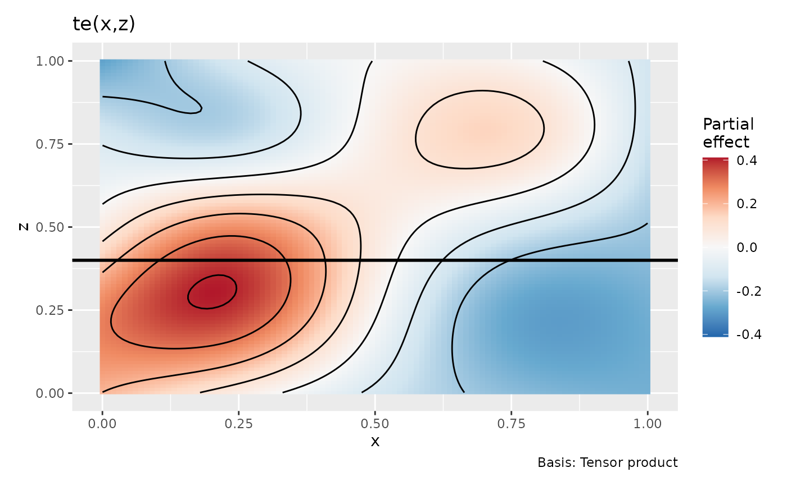
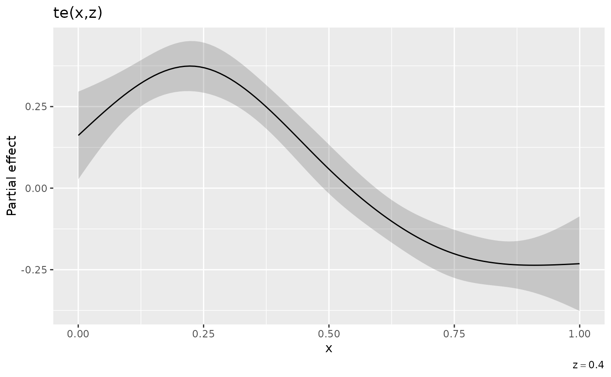
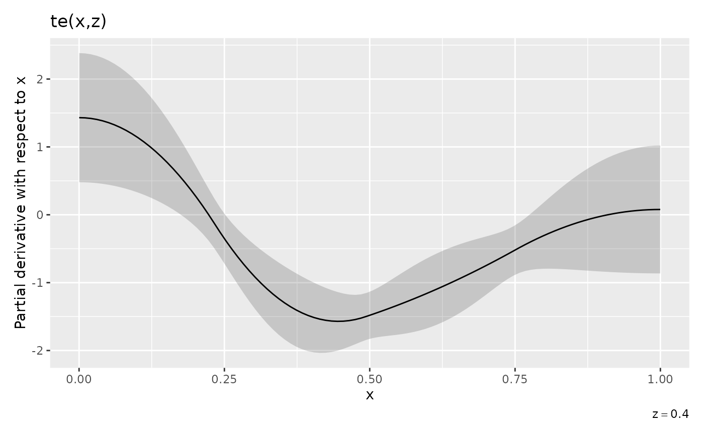
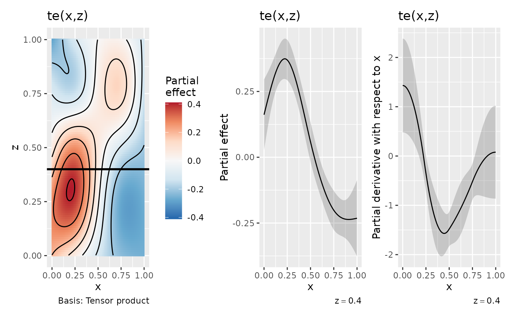

Partial derivatives of estimated multivariate smooths via finite differences
Source:R/derivatives.R
partial_derivatives.RdPartial derivatives of estimated multivariate smooths via finite differences
Usage
partial_derivatives(object, ...)
# S3 method for default
partial_derivatives(object, ...)
# S3 method for gamm
partial_derivatives(object, ...)
# S3 method for gam
partial_derivatives(
object,
term,
focal = NULL,
data = newdata,
order = 1L,
type = c("forward", "backward", "central"),
n = 200,
eps = 1e-07,
interval = c("confidence", "simultaneous"),
n_sim = 10000,
level = 0.95,
unconditional = FALSE,
frequentist = FALSE,
offset = NULL,
ncores = 1,
partial_match = FALSE,
...,
newdata = NULL
)Arguments
- object
an R object to compute derivatives for.
- ...
arguments passed to other methods.
- term
character; vector of one or more smooth terms for which derivatives are required. If missing, derivatives for all smooth terms will be returned. Can be a partial match to a smooth term; see argument
partial_matchbelow.- focal
character; name of the focal variable. The partial derivative of the estimated smooth with respect to this variable will be returned. All other variables involved in the smooth will be held at constant. This can be missing if supplying
data, in which case, the focal variable will be identified as the one variable that is not constant.- data
a data frame containing the values of the model covariates at which to evaluate the first derivatives of the smooths. If supplied, all but one variable must be held at a constant value.
- order
numeric; the order of derivative.
- type
character; the type of finite difference used. One of
"forward","backward", or"central".- n
numeric; the number of points to evaluate the derivative at.
- eps
numeric; the finite difference.
- interval
character; the type of interval to compute. One of
"confidence"for point-wise intervals, or"simultaneous"for simultaneous intervals.- n_sim
integer; the number of simulations used in computing the simultaneous intervals.
- level
numeric;
0 < level < 1; the confidence level of the point-wise or simultaneous interval. The default is0.95for a 95% interval.- unconditional
logical; use smoothness selection-corrected Bayesian covariance matrix?
- frequentist
logical; use the frequentist covariance matrix?
- offset
numeric; a value to use for any offset term
- ncores
number of cores for generating random variables from a multivariate normal distribution. Passed to
mvnfast::rmvn(). Parallelization will take place only if OpenMP is supported (but appears to work on Windows with currentR).- partial_match
logical; should smooths be selected by partial matches with
term? IfTRUE,termcan only be a single string to match against.- newdata
Deprecated: use
datainstead.
Value
A tibble, currently with the following variables:
smooth: the smooth each row refers to,var: the name of the variable for which the partial derivative was evaluated,data: values ofvarat which the derivative was evaluated,partial_deriv: the estimated partial derivative,se: the standard error of the estimated partial derivative,crit: the critical value such thatderivative±(crit * se)gives the upper and lower bounds of the requested confidence or simultaneous interval (givenlevel),lower: the lower bound of the confidence or simultaneous interval,upper: the upper bound of the confidence or simultaneous interval.
Examples
library("ggplot2")
library("patchwork")
load_mgcv()
# \dontshow{
op <- options(pillar.sigfig = 3, cli.unicode = FALSE)
# }
df <- data_sim("eg2", n = 2000, dist = "normal", scale = 0.5, seed = 42)
# fit the GAM (note: for execution time reasons, k is set articifially low)
m <- gam(y ~ te(x, z, k = c(5, 5)), data = df, method = "REML")
# data slice through te(x,z) holding z == 0.4
ds <- data_slice(m, x = evenly(x, n = 100), z = 0.4)
# evaluate te(x,z) at values of x & z
sm <- smooth_estimates(m, smooth = "te(x,z)", data = ds) |>
add_confint()
# partial derivatives
pd_x <- partial_derivatives(m, data = ds, type = "central", focal = "x")
# draw te(x,z)
p1 <- draw(m, rug = FALSE) &
geom_hline(yintercept = 0.4, size = 1)
p1

# draw te(x,z) along slice
cap <- expression(z == 0.4)
p2 <- sm |>
ggplot(aes(x = x, y = est)) +
geom_ribbon(aes(ymin = lower_ci, ymax = upper_ci), alpha = 0.2) +
geom_line() +
labs(x = "x", y = "Partial effect", title = "te(x,z)",
caption = cap)
p2

# draw partial derivs
p3 <- pd_x |>
draw() +
labs(caption = cap)
p3

# draw all three panels
p1 + p2 + p3 + plot_layout(ncol = 3)

# \dontshow{
options(op)
# }